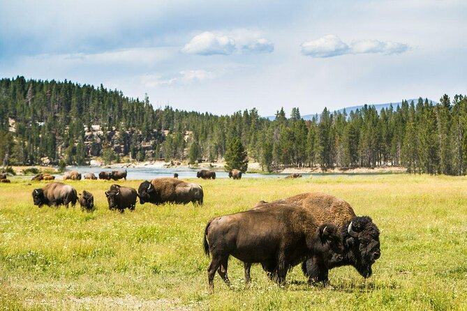
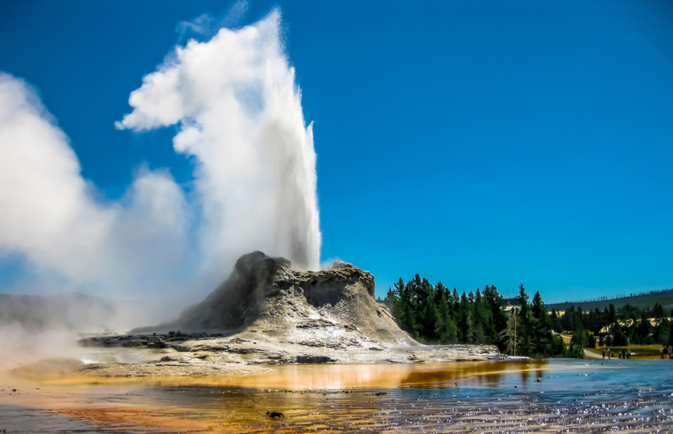
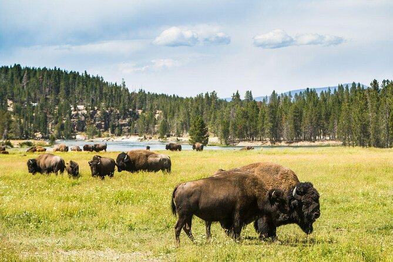
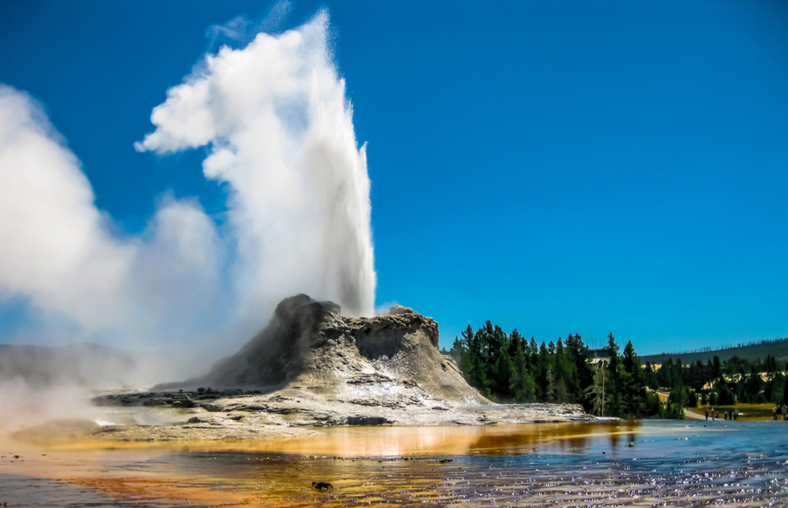
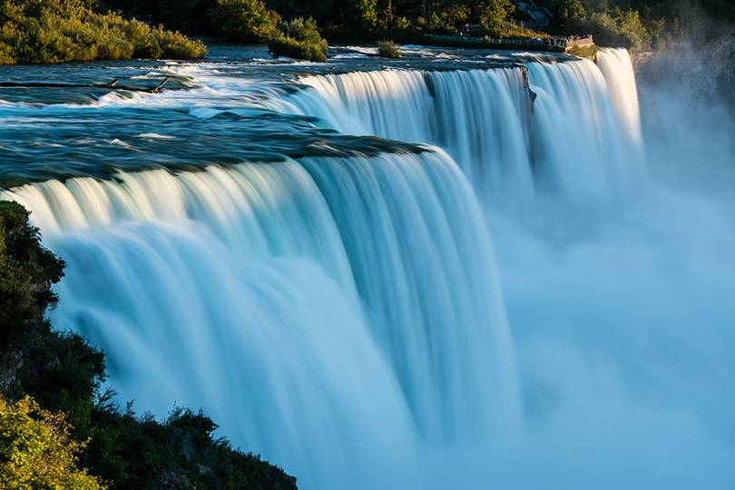

Yellowstone


Geographical Location: North America
Yellowstone National Park is located in the United States, primarily in Wyoming, but also in Montana and Idaho. It is the first national park in the United States, and is known for its wildlife and geothermal features.
Yellowstone National Park is a great place to visit if you are interested in seeing wildlife. There are many different species of animals that live in the park, including bison, elk, and wolves. There are also many different geothermal features, such as hot springs and geysers.
Photo Gallery


 



Niagara Falls
Geographical Location: North America
Niagara Falls is located on the border between Canada and the United States. Connecting Lake Erie and Lake Ontario, Niagara Falls has the highest flow rate of any waterfall in North America.
Niagara Falls draws in thousands of visitors every year, and for good reason. As such, there are numerous things that you can see while you visit the falls, and it is very easy to make a full trip out of seeing this wonderful sight.
Photo Gallery


Lake Tahoe


Geographical Location: North America
Lake Tahoe is located on the border between California and Nevada. It is the largest alpine lake in North America, and is known for its clear water and beaches.
Lake Tahoe is a great place to visit if you are interested in water sports. There are many different activities that you can do on the lake, including kayaking, paddle boarding, and jet skiing. There are also many different hiking trails around the lake.
Photo Gallery